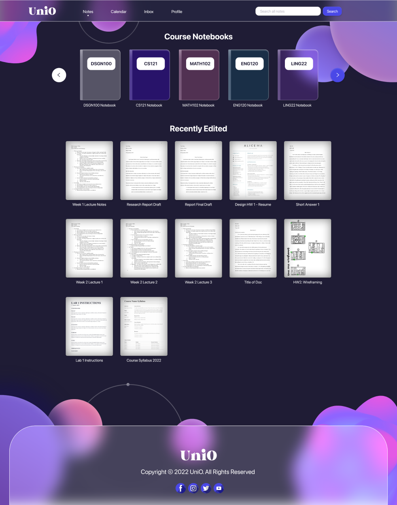

THE GOAL
Creating a notetaking flow for an online university's website
Most note taking applications on the market make it difficult to do cross-platform editing, like the tablet applications for handwritten notes that are often not transferrable to other devices. For this case study, I am working towards the goal of creating a notetaking flow within an online university's website. I hope to create a convenient method for well-organized, cross-platform notetaking for the university's students.
UNDERSTANDING USERS
People take notes in different ways
The users for this project can be categorized into two main groups: students who use their keyboard to take notes, and students who prefer to write down their notes. To understand the users, I went through the process of drafting personas and journey maps, and conducting user testing.
UNDERSTANDING USERS
Looking at the needs of the users
Moving forward, I created user personas that represented different users in order to help with identifying different user pain points. The persona below is Jill, a 19 year old female:
Jill is from San Diego, and she currently attends an online university called UniO. She is an avid notetaker who must take notes for every class. However, Jill struggles with creating a well-organized system to categorize her notes.
IDEATION
From paper to prototype
To begin designing, I transferred the ideas from my ideation and research process onto paper wireframes for my desktop website.

After drawing these paper wireframes, I moved on and created more refined versions on Adobe XD for all the pages in the app. After that, I connected the screens and made it into an interactive mid-fi prototype.

USER TESTING
The problems with my current design
Through conducting user testing on the mid-fi prototypes, I noticed some themes and converted these themes into new findings for my design:
-
Small font size caused difficulty for users when finding notes section
-
Current grayed out background color did not provide enough contrast
-
Overcomplicated animations led to lag for all users in the study
MAKING CHANGES
Making improvements based on study results
After conducting user research and testing, I made some changes to my high-fidelity prototype!
1. Dark Mode Website
I went from the original light background idea and converted to a dark mode design to provide minimum strain on their eyes while taking notes.
2. Enlarged Header
Previously, users found the text on the header to be small, so I used a bigger and slightly thicker font to increase visibility of the words on the header bar.

→

RESPONSIVE DESIGN
Adding a mobile web design
To make the design responsive, I created a mobile version of the web design with changes to the layout to fit the smaller screen size.
FINAL PRODUCT
The Style Guide
While I was creating my high fidelity prototype, I compiled the components that I used (buttons, typefaces, color schemes, etc) into a single sticker sheet.

ACCESSIBILITY
Taking accessibility into consideration
1. Hierarchy
For my design, I tried my best to keep the layout and user flow of my pages organized. I also made sure the text had proper hierarchy, which places emphasis on key information.
2. Contrasting Colors
I used a deep dark blue color as the background and white as the text, which provides almost as much contrast and black and white do. This creates an easier to read experience for not only those with visual impairments, but also for all other users as well.
TAKEAWAYS
What I learned from this
From this experience, I learned that designing for desktop sites is a very different experience compared to mobile designing because of the scaling. I often found myself making elements way too small or too large for web because I'm used to mobile designing. Of course, in terms of responsive web design, I learned that I have much room for improvement.